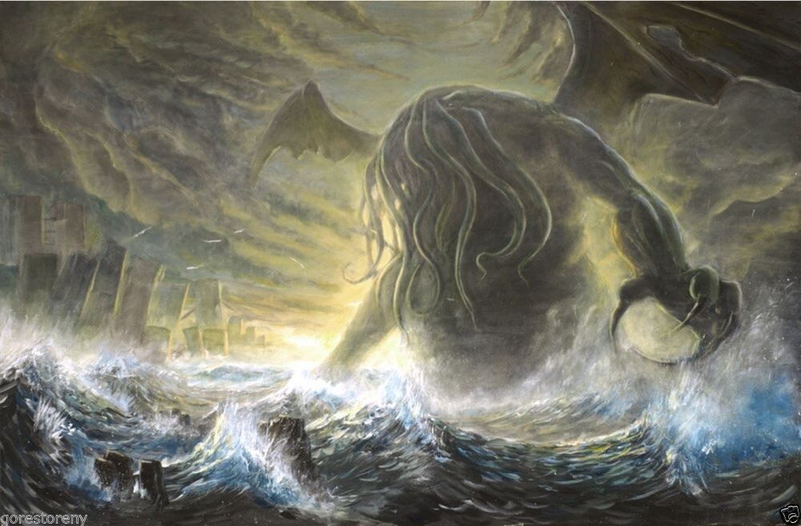
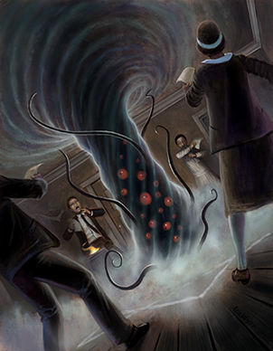

Chamado de Cthulhu
Chamado de Cthulhu é um RPG de horror ficcional baseado no conto de mesmo nome escrito por H.P. Lovecraft e os então chamados Cthulhu Mythos, também inspirados no conto. O jogo, frequentemente abreviado como CoC, é publicado pela Chaosium. No Brasil é publicado pela New Order Editora.
Em Chamado de Cthulhu, os jogadores controlam pessoas comuns, investigadores que procuram resolver e revelar mistérios paranormais, normalmente ligados aos Mitos de Cthulhu, e sobreviver as suas criaturas mortais e danosas a psique humana.
Origens
A concepção original do RPG de Chamado de Cthulhu se deu através de um projeto chamado Dark Worlds, jogo encomendado pela editora Chaosium, mas que nunca chegou a ser publicado. Posteriormente, Sandy Petersen, que posteriormente seria conhecido por seu trabalho no jogo de computador Doom e Quake, entrou em contato com a editora, oferecendo-se para escrever um suplemento para seu popular jogo de fantasia RuneQuest, baseado nas Dreamlands de Lovecraft. Ele assumiu a redação de Chamado de Cthulhu, e o jogo foi lançado em 1981, utilizando uma versão simplificada do sistema utilizado em RuneQuest. O jogo ganhou três importantes prêmios no ano seguinte (v. Recepção, a seguir).

Cenário
O cenário de Chamado de Cthulhu é uma versão sombria do nosso mundo, baseada na observação de H. P. Lovecraft de que "A mais antiga e forte emoção do ser humano é o medo, e o tipo mais forte de medo é o medo do desconhecido". Estas são as três eras primárias do jogo original: os anos 1920, cenário de vários contos de Lovecraft; os anos 1890, numa mistura de ocultismo e de mistério nos moldes de Sherlock Holmes, ambientado principalmente na Inglaterra; e conspiração moderna. Adições recentes incluem os anos 1000 d.C., o Século 23 e a época da Roma Antiga. O protagonista também poderá viajar por lugares que não existem neste mundo, representados na Terra dos Sonhos, que pode ser acessada tanto através dos sonhos quanto por conexões físicas com a Terra (inspirado no romance A Procura de Kadath); bem como viajar por outros planetas no espaço sideral (uma constante nos contos de H. P Lovecraft).
Experiência de Jogo
Os jogadores interpretam pessoas comuns que, de repente, são lançadas em um reino de mistérios: detetives, criminalistas, estudiosos, artistas, veteranos de guerra, etc. Com frequência os acontecimentos começam inocentemente até que, gradualmente, os segredos ocultos e aterrorizantes vão sendo revelados. Conforme os personagens aprendem mais dos verdadeiros horrores do mundo e da irrelevância da humanidade, sua sanidade (representado pelo atributo Sanity Points, abreviadamente SAN) inevitavelmente se esvai, com efeitos em jogo. O jogo inclui um mecanismo para determinar o quão mentalmente danificado um personagem está em determinado momento, pois encontrar seres horríveis geralmente provoca a perda de pontos de SAN. Além disso, para obter as ferramentas necessárias para derrotar os horrores - o conhecimento místico e mágico - os personagens devem estar dispostos a abrir mão de alguma parte de sua sanidade.
Chamado de Cthulhu tem a reputação de ser um jogo em que é bastante comum um personagem morrer em circunstâncias horríveis ou acabar em uma instituição para tratamento mental. Ao contrário da maioria dos jogos role-playing, o eventual triunfo dos jogadores não é esperado neste jogo.

Regras
Chamado de Cthulhu utiliza o mesmo sistema de regras básico de outros cenários da Chaosium. Essencialmente é o mesmo sistema do Basic Roleplaying, mas com pequenas diferenças. A mais fundamental é que enquanto permanecem funcionalmente saudáveis e sãos, os personagens crescem e se desenvolvem. No entanto, Chamado de Cthulhu (e outros sistemas d100) não faz uso do conceito de níveis de personagem, baseando-se completamente nas perícias (em porcentagens, usando dois dados de 10 faces), que se desenvolvem à medida que o personagem as utiliza com sucesso.
Edições
Em 2001, ganhou uma versão para o sistema d20, fazendo o jogo compatível com a terceira edição de Dungeons & Dragons.
No Brasil, a 6ª edição foi financiada coletivamente no Catarse e publicada pela editora Terra Incognita. O projeto de financiamento foi iniciado no Dia das Bruxas (31 de outubro de 2013), e encerrou no dia de Natal (25 de dezembro de 2013). A empresa pediu R$ 38.000,00 e arrecadou R$ 59.276,00. Em dezembro de 2017, um novo financiamento coletivo foi criado pela editora New Order Editora, para a 7ª edição do jogo. Esse projeto obteve o maior índice de apoios já visto, batendo a meta em 578%: foi pedido R$ 40.000,00 e alcançaram R$ 231.555,00.
Recepção
O jogo venceu diversas das maiores premiações da área ao longo dos anos:
- 1981, Game Designer's Guild, Select Award
- 1982, Origins Awards, Best Role Playing Game
- 1985, Games Day Award, Best Role Playing Game
- 1986, Games Day Award, Best Contemporary Role Playing Game
- 1987, Games Day Award, Best Other Role Playing Game
- 1993, Leeds Wargame Club, Best Role Playing Game
- 1994, Gamer's Choice Award, Hall of Fame
- 1995, Origins Award, Hall of Fame
- 2001, Origins Award, Best Graphic Presentation of a Book Product (Chamado de Cthulhu 20th anniversary edition)
- 2003, GamingReport.com, o mais votado como Number One Gothic/Horror RPG